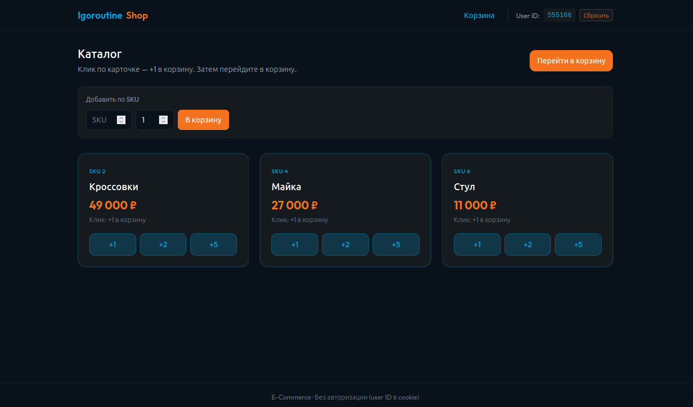
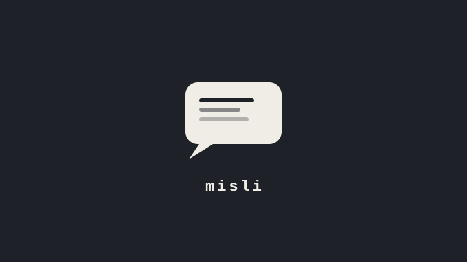
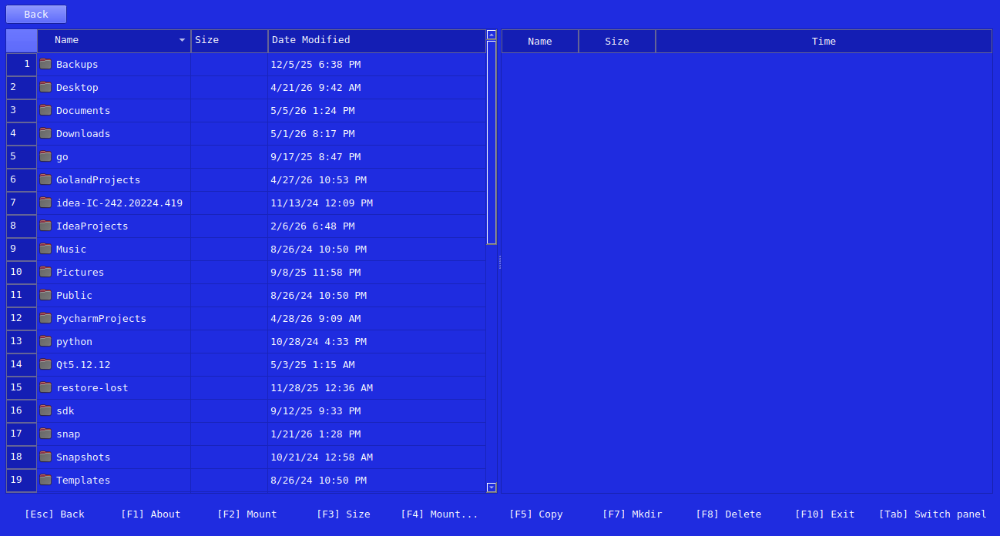

Проекты

001
E-commerce
Создание модели для социальной сети, используя PostgreSQL, gRPC и protobuf. Бэкэнд и логика написана на Go, фронтенд - HTML
Подробнее →
001
QEasy App
Создание модели для социальной сети, используя PostgreSQL, gRPC и protobuf. Бэкэнд и логика написана на Go, фронтенд - HTML
Подробнее →

001
Social network model
Создание модели для социальной сети, используя PostgreSQL, gRPC и protobuf. Бэкэнд и логика написана на Go, фронтенд - HTML
Подробнее →
-
Concrypto (Concurrency cryptography)
Реализация функции для многопоточного шифрования банковских карт. С учётом стандарта PCI-DSS, ротации ключей шифрования в хранилище и с использованием алгоритма AES-GCM для шифрования карт.
Подробнее →

002
FAT-manager
Парсер файловых систем FAT16/FAT32 с двухпанельным интерфейсом в духе Far Manager.
Подробнее →

004
Telegram-бот для начального интерфеса модели социальной сети
Бот для интерфейса модели социальной сети.
Обработка команд, интеграция с внешними API (Telegram API).
Подробнее →